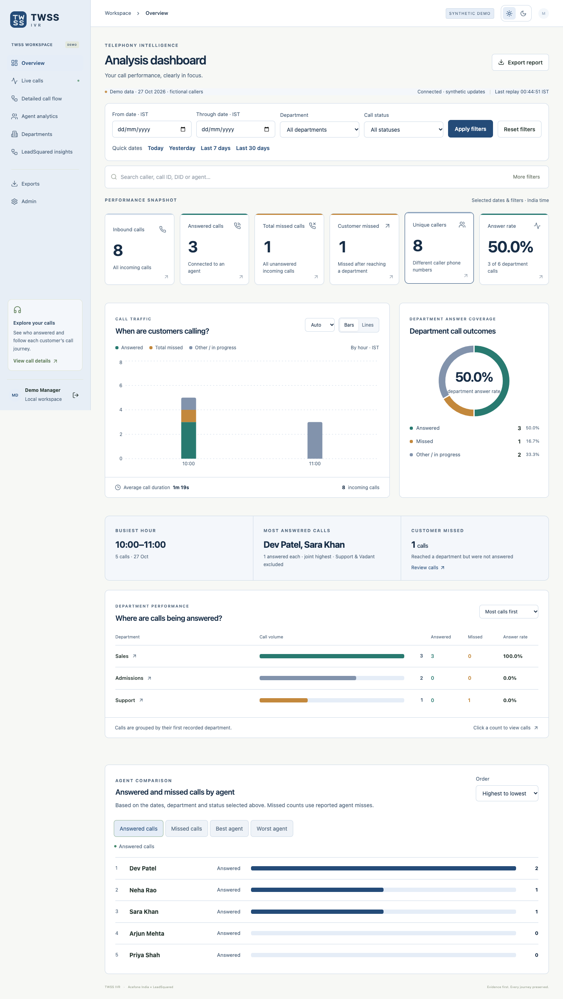
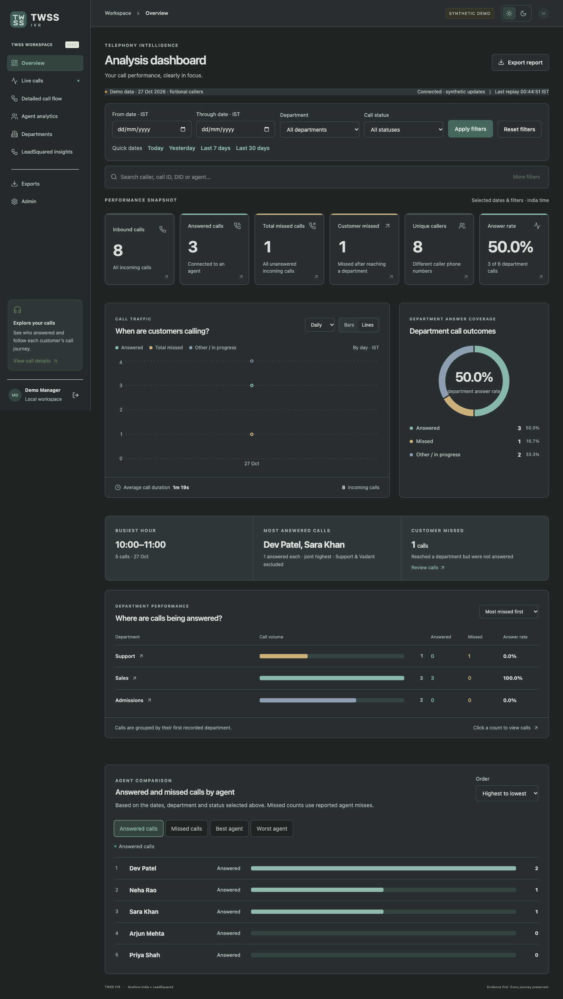
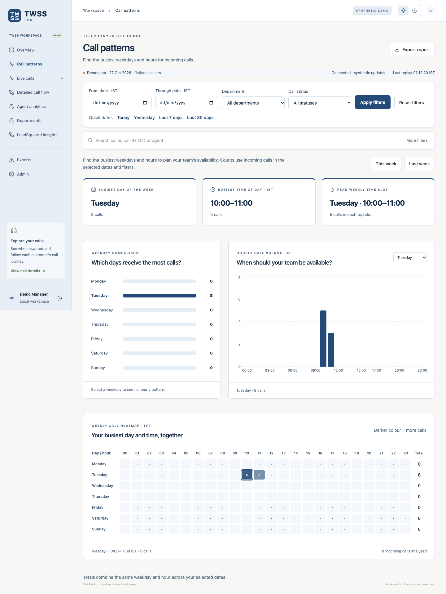
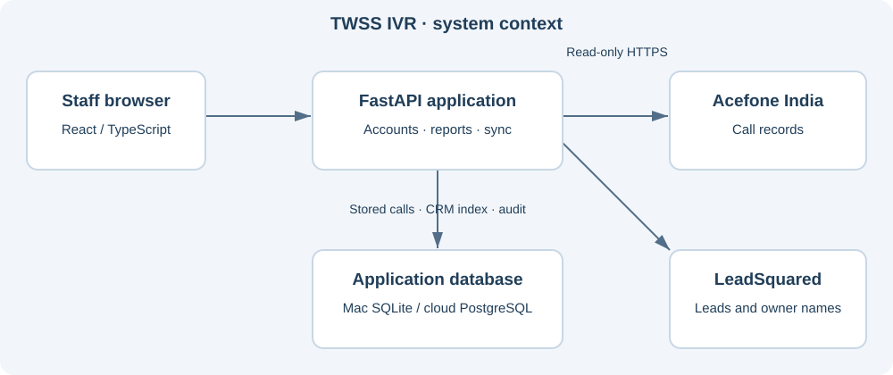

TWSS IVR documentation
2026-10-30 · 63 documents · Review drafts
Business requirements, architecture, data contracts, controls, operations and staff guides for the current project.
Current cloud limitation: Neon transfer quota exhausted. The Mac installation is the operational fallback.
Master register · Word BRD · OpenAPI
Illustrations use synthetic data. Mermaid diagrams are retained as source in the architecture chapters for compatible viewers.
P-01 — Business Requirements Document
Baseline: 2026-10-30 · Status: As-built draft — review pending
Proposed responsible function: Business owner / Product. No named assignment or approval is implied.
Business purpose
TWSS IVR helps The WallStreet School understand incoming call demand, answered and missed calls, agent performance and whether callers already exist in LeadSquared. Founders and managers need understandable figures that can be traced back to calls. Acefone India is the telephony source. LeadSquared supplies CRM leads and user names. The application reads these services; it does not create CRM leads or place calls.
Business outcomes and scope
| Requirement | Expected business result | Current delivery |
| BRD-01 | See incoming volume, answered/missed totals and department answer rate | Analysis dashboard |
| BRD-02 | Identify the busiest weekday and hour | Call patterns, weekday charts and heatmap |
| BRD-03 | Explain who answered and which agents were reported missed | Detailed flow and call drawer |
| BRD-04 | Compare staff outcomes without treating failover as a competitive agent | Answered/missed/best/worst views |
| BRD-05 | Check callers against existing leads | LeadSquared insights, all candidate leads retained |
| BRD-06 | Analyse past dates and departments independently per tab | IST date ranges and route-specific filters |
| BRD-07 | Restrict customer data and operational changes by role | Named accounts, Viewer masking, Admin/Manager permissions |
| BRD-08 | Recover previous call history and keep data across restarts | Resumable imports, Mac SQLite, cloud PostgreSQL |
Acceptance examples
For the same date and scope, dashboard totals and the call list must reconcile. Sixteen answered calls must not be silently presented as thirteen merely because a department-only filter is enabled: the latter is a separately labelled subset. A department answer rate uses answered department calls in its numerator and all department calls in its denominator. A caller with two different matching leads must show both, without arbitrary selection. A missed agent is distinct from an unanswered customer call.
Users, constraints and boundaries
Admin manages accounts and mappings. Managers analyse and export. Viewers inspect masked reports. Mac operation is the current working route; cloud service previously deployed to Render Free is blocked by Neon's exhausted monthly network-transfer allowance as of this document date. No paid hosting change is approved. Mac and cloud databases are independent after the original migration.
Not included: verified real-time provider live events, exact transfer-link reconstruction, recording playback, CRM call-activity creation, automated callbacks, SSO/MFA, sentiment analysis, transcription or AI recommendations. This document is a requirements baseline for review, not a signed business acceptance or legal certificate.
Delivery and approval
Existing implementation and tests are evidence of functionality. Business acceptance, privacy approval, quota recovery and production availability targets remain separate decisions. See P-03 for functional criteria, P-09 for calculation rules, M-03 for risks and Q-02 for sign-off.
---
Evidence: README.md; backend/app/reports.py; frontend/src/main.tsx; docs/phase-status.md. Source baseline: 9fa87271efd5d69d2d769c519150b032df97bdf9.
Documentation register
P-02 — Product Walkthrough
Baseline: 2026-10-30 · Status: As-built draft — review pending
Proposed responsible function: Product / Design. No named assignment or approval is implied.
Start the walkthrough
Open the Mac app at http://localhost:8001 and sign in with your assigned account. Use the synthetic preview for demonstrations; do not distribute customer screenshots. The images linked below were captured from fictional fixtures, not the live account.
Screen tour
| Screen | Business question | Main action |
| Overview | How well are incoming calls being handled? | Click a KPI to inspect calls |
| Call patterns | Which weekday and hour bring the most calls? | Choose a week and inspect the heatmap |
| Live calls | Are any stored calls marked in progress? | Inspect records; this is not verified real-time telephony |
| Detailed call flow | What happened during a call? | Expand timeline or open the call drawer |
| Agent analytics | Who answered or missed calls? | Compare counts and per-agent ratios |
| Departments | Where were calls attributed? | Compare first-department totals |
| LeadSquared insights | Does the caller have a lead, and who owns it? | Review creation date, current stage and owner name |
| Exports / Admin | How do we share reports and manage access? | Export if permitted; manage staff as Admin |
Demonstration sequence
- Choose a historical day on Overview and inspect total calls and department answer rate.
- Open Call patterns, select Last week, and inspect the busiest weekday and hour.
- Open a call and examine provider-reported agent activity. Missing evidence is not invented.
- Open LeadSquared insights. The default is all answered calls. Set Missed to reveal All missed calls and Missed after department selection.
- Visit another tab: its filters stay independent. Return to restore the first tab's applied choices.
Visual material
Overview — synthetic light, Overview — synthetic dark, Call patterns — synthetic.



The interactive application is the demonstration. This pack does not reproduce the other project's HTML prototype or import its learning-platform requirements.
---
Evidence: frontend/src/main.tsx; frontend/src/AnalysisDashboard.tsx; frontend/src/CallPatterns.tsx. Source baseline: 9fa87271efd5d69d2d769c519150b032df97bdf9.
Documentation register
P-03 — Product Requirements Specification
Baseline: 2026-10-30 · Status: As-built draft — review pending
Proposed responsible function: Product / Engineering. No named assignment or approval is implied.
Functional acceptance matrix
| ID | Requirement and pass condition | Evidence |
| FR-01 | Staff sign in by username/password; client-selected role never elevates permissions | auth.py; test_internal.py |
| FR-02 | Overview counts distinct logical inbound calls and known unique phone numbers | reports.py; test_dashboard_metrics.py |
| FR-03 | Department answer rate excludes both answered and missed calls without routing evidence | reports.py; test_dashboard_metrics.py |
| FR-04 | Flow retains provider identity, unknown numbers, event order and reported misses | cdr.py; test_history_and_flow.py |
| FR-05 | LeadSquared preserves every matching lead and resolves owner names where available | crm_analytics.py; test_owner_directory.py |
| FR-06 | LeadSquared opens with all answered calls; Missed offers the department subsection | LeadSquaredInsights.tsx; ls-missed.spec.ts |
| FR-07 | Weekday/hour grouping uses Asia/Kolkata, preserves ties and has no zero-volume winner | callPatternsModel.ts; its unit tests |
| FR-08 | Sidebar navigation restores each tab's own applied query; row preferences are per route | main.tsx; PageSize.tsx; tab-filters.spec.ts |
| FR-09 | CSV/XLSX call exports require Manager/Admin and create audit records | api.py; test_api.py |
| FR-10 | History import checkpoints survive interruption and reject unsupported date ranges | history.py; test_history_and_flow.py |
Error and empty states
An empty filtered page means no matching stored records; it does not prove complete provider coverage. CRM checking/pending is not equivalent to no lead. Invalid caller numbers do not erase identified call records. Provider failure retains previous data and surfaces health status. Zero department calls produce an unavailable rate, not a fabricated zero-percent success figure.
Release constraints
Exact transfer edges, per-agent ring totals and recording playback remain unavailable. There is no claim of production load certification or uninterrupted cloud service. Generic exports do not include the full LeadSquared analytics table; department_selected export parity is an identified gap. See Q-01/Q-02 for verification and U-01 for user-facing operation.
---
Evidence: tests/; frontend/e2e/; frontend/e2e-internal/; backend/app/api.py. Source baseline: 9fa87271efd5d69d2d769c519150b032df97bdf9.
Documentation register
P-04 — Personas and Journey Maps
Baseline: 2026-10-30 · Status: As-built draft — review pending
Proposed responsible function: Product / Operations. No named assignment or approval is implied.
Personas
| Persona | Goal | Need / constraint | App role |
| Founder / business reviewer | Understand demand and service gaps | Plain language, correct denominator, current filters visible | Manager or Viewer by access decision |
| Operations manager | Review missed callers and staffing patterns | Week/hour comparison, call evidence and date range | Manager |
| Administrator | Maintain access and investigate sync failures | Staff management, mappings, provider state and audit | Admin |
| Read-only analyst | Review aggregate performance safely | Masked numbers and restricted lead names | Viewer |
Founder journey
Select dates → review incoming/answered/missed KPIs → inspect department answer rate → examine busiest day/hour → drill into missed department calls → inspect lead stage and owner → export permitted call details. Confusion points include mixing agent misses with customer misses, mixing unique callers with call counts, and reading a current CRM stage as a historical one.
Operations journey
Choose a week or historical day → select department/status → inspect the caller cohort → open a timeline → review agent evidence → identify follow-up work outside the app. No automatic callback or CRM mutation is implied.
Admin journey
Create a named account → staff changes first password → allocate least privilege → check provider health → investigate an incomplete import or quota → take a protected backup before changes → verify recovery. Formal support roles and escalation contacts require assignment by TWSS; account role alone is not incident ownership.
---
Evidence: frontend/src/InternalLogin.tsx; frontend/src/AnalysisDashboard.tsx; frontend/src/LeadSquaredInsights.tsx. Source baseline: 9fa87271efd5d69d2d769c519150b032df97bdf9.
Documentation register
P-05 — User Workflow Specifications
Baseline: 2026-10-30 · Status: As-built draft — review pending
Proposed responsible function: Product / Operations. No named assignment or approval is implied.
WF-01 Sign in
Receive assigned username and temporary password privately. Sign in and replace the temporary password before reading customer data. Invalid/locked credentials return an error; role comes from the stored account.
WF-02 Daily analysis
Choose IST From/Through dates → department/status → Apply filters. Review totals, then click a KPI or department count for the scoped call list. An explicit drilldown carries context; ordinary sidebar navigation restores the destination tab's own filters.
WF-03 Missed caller analysis
LeadSquared insights → Call status Missed → Apply → choose All missed calls or Missed after department selection. Both counts use the same date/search/department filters; choosing a subsection resets pagination and updates caller/lead details. Repeated phone numbers form one caller row with multiple calls.
WF-04 Weekly staffing review
Call patterns → This week / Last week or custom dates → read busiest weekday/hour/combined slot → click a weekday or heatmap cell to focus hourly volume. Totals aggregate matching weekdays across the selected range. This week ends today; Last week is a full Monday–Sunday interval.
WF-05 Missing history
Calendar filtering reads stored records only. Admin/Manager may use the supported history-import API or import script for the last 90 calendar days. Check job completion and rejected records; retry an ERROR job from its saved checkpoint. Do not substitute an undocumented archive endpoint.
WF-06 Recovery
For cloud failure, distinguish Render sleep from Neon refusal. A confirmed monthly transfer suspension needs a billing-cycle reset or an explicitly authorized plan change. Local startup uses the Mac SQLite copy; it does not merge cloud-only records automatically. Follow D-07 before switching or restoring databases.
---
Evidence: frontend/src/ReportFilters.tsx; backend/app/history.py; scripts/internal.py. Source baseline: 9fa87271efd5d69d2d769c519150b032df97bdf9.
Documentation register
P-06 — Roles and Permissions Matrix
Baseline: 2026-10-30 · Status: As-built draft — review pending
Proposed responsible function: Security / Product. No named assignment or approval is implied.
Implemented roles
| Action | Viewer | Manager | Admin |
| Read overview, patterns, agent, department and CRM reports | Yes, masked | Yes | Yes |
| Read call journey and provider health | Yes, masked | Yes | Yes |
| Change own password / sign out | Yes | Yes | Yes |
| CSV/XLSX export | No | Yes | Yes |
| Request/retry supported historical import | No | Yes | Yes |
| Request sync now | No | No | Yes |
| List/create/update staff | No | No | Yes |
| Create/end department mapping | No | No | Yes |
| Inspect audit/quarantine/raw-event administrative endpoints | No | No | Yes |
| Play a recording | Unavailable | Endpoint returns unavailable | Endpoint returns unavailable |
| Mutate Acefone/LeadSquared records | Not implemented | Not implemented | Not implemented |
Enforced rules
Authorization is checked in the backend. Hidden buttons are not a permission boundary. Viewer responses mask caller/DID numbers and selected agent-number evidence, and replace lead display names with Restricted lead. This is masking, not anonymization: aggregate counts, last digits and staff-related fields may remain visible. No field-level privacy certification is implied.
The last active administrator cannot be disabled/demoted through the account API. Account role/access/password updates revoke sessions. Password change revokes other sessions. Named accounts have mandatory first-password replacement, and the login form cannot grant a different role.
Scope and gaps
There is no department-restricted row-level authorization, tenant partitioning, SSO/MFA or formal break-glass workflow. The app's Admin account does not grant OS, Render or Neon access. Manual username/display-name changes have been operational actions; the current staff-edit API supports role, active flag and password, not username editing.
---
Evidence: backend/app/auth.py; backend/app/accounts.py; backend/app/reports.py; backend/app/api.py. Source baseline: 9fa87271efd5d69d2d769c519150b032df97bdf9.
Documentation register
P-07 — UI UX Specification and Design System
Baseline: 2026-10-30 · Status: As-built draft — review pending
Proposed responsible function: Design / Frontend. No named assignment or approval is implied.
Current design
TWSS IVR uses a code-native TWSS SVG brand mark, React/TypeScript, semantic CSS variables, a compact Light/Dark switch and responsive cards/tables. Corporate navy is the light appearance; soft charcoal is the dark appearance. Charts use muted answer/missed/other colours and readable labels. No bitmap logo or third-party prototype is required.
Interaction standards
Sidebar entries identify the current screen. Date controls explicitly use IST. Apply filters commits date/department/status choices; Reset affects the active tab. Each tab retains its own applied query while navigating within the workspace. Row-count preferences are stored per route. Direct URLs keep the current selection on refresh; other tabs' filter histories are held in workspace memory, not a durable cross-device account profile.
Counts and rates must name their scope. All answered calls and answered department calls are different cohorts. Missed-call subsection buttons display stable total and department counts. Unknown owner names display unavailable instead of an identifier as a name. Exact transfer edges and ring-attempt figures are not presented as established facts.
Accessibility and responsive behaviour
Buttons and inputs have accessible labels; chart data is accompanied by text/counts. Heatmap cells identify weekday, IST hour and volume, and the day labels stay visible while scrolling. Dense tables scroll within their containers on small screens. Chrome tests cover mobile width and both appearances. These checks are not a completed accessibility conformance audit; see C-08.
Content style
Use short business terms and active instructions. Keep operational diagnostics in Admin/developer material. Distinguish no matches from checking, missing data from zero, and current lead state from state at call time.
---
Evidence: frontend/src/themes.ts; frontend/src/themes.css; frontend/src/Brand.tsx; frontend/src/dashboard.css; frontend/src/callPatterns.css. Source baseline: 9fa87271efd5d69d2d769c519150b032df97bdf9.
Documentation register
P-08 — Reporting Content and Data Presentation Guide
Baseline: 2026-10-30 · Status: As-built draft — review pending
Proposed responsible function: Product / Data. No named assignment or approval is implied.
Purpose
Replace the reference project's learning-content authoring rules with reporting rules relevant to TWSS IVR. Every caption should help a business reader understand the cohort and unit being counted.
Presentation rules
| Concept | Preferred wording | Avoid |
| All answered customer calls | Answered calls | Answered legs when leg coverage is absent |
| Missed routed calls | Missed after department selection | Using every missed call as customer missed |
| CRM pending | Checking LeadSquared | No lead found before a successful check |
| Current owner | Resolved owner name or Owner name unavailable | Labelling a GUID as a person's name |
| Time | IST with date/hour where needed | Mixing UTC export timestamps with local display silently |
| No denominator | Unavailable / — | NaN, infinity or invented zero |
Evidence and examples
Use synthetic caller IDs and fictional names in training material. Do not paste API tokens, signed recording URLs, staff passwords or tenant captures into documents. A department reporting label alone is insufficient to prove a Department event. The UI may use business-friendly wording, but technical specifications retain this limitation.
Review checklist
Verify numerator and denominator; distinguish calls from unique callers; label any selected subset; preserve tied leaders; identify incomplete provider coverage; keep current-stage wording; confirm that screenshots represent the referenced release. For exports, state which columns and filters the actual route supports.
---
Evidence: backend/app/reports.py; backend/app/crm_analytics.py; frontend/src/LeadSquaredInsights.tsx. Source baseline: 9fa87271efd5d69d2d769c519150b032df97bdf9.
Documentation register
P-09 — Business Rules Specification
Baseline: 2026-10-30 · Status: As-built draft — review pending
Proposed responsible function: Product / Data / Engineering. No named assignment or approval is implied.
Call identity and routing
BR-01: One logical call is identified by provider plus call_id; never merge by caller phone and nearby time. BR-02: Unknown caller/DID values do not erase an otherwise identified call. Conflicting root identities and unsupported directions are quarantined. BR-03: For real CDRs, department selection means a named Department event in the retained flow. A DID mapping/reporting label or DTMF digit alone is not enough.
KPI definitions
| Metric | Rule |
| Inbound calls | Filtered logical calls whose direction is inbound |
| Answered / total missed | Respective final call outcome, not sums of agent events |
| Customer missed | MISSED inbound calls with recorded department routing |
| Department answer rate | ANSWERED inbound department calls / all inbound department calls |
| Overall answer rate | All ANSWERED inbound calls / all inbound calls, separately available in the API |
| Unique callers | Distinct known normalized caller numbers in scope |
| Repeat calls in CRM report | Additional calls per known number after its first selected call |
Zero department calls return null for the department rate. Synthetic illustration: 9 answered among 12 department calls gives 75%; answered calls without department evidence are excluded from both sides.
Agent and CRM rules
Agent answered/missed counts use distinct calls per agent. One agent can miss and later answer the same call; the two ratios can overlap. Recorded dial positions do not prove exact provider ring-attempt coverage. Best/worst ranking excludes Support calls and the configured Vadant/Vadat/Vadnt failover name variants. Best is highest answered-call count; worst is highest reported missed-call count. Ties are shown.
Phone/Mobile are normalized, and all distinct matching lead IDs are retained. A positive cache match can be shown before a per-call projection refresh. Failed/incomplete searches do not establish absence. Lead creation is compared with the caller's first selected call; creation after a call does not prove causation. Stage and owner are current saved values, not historical snapshots.
Date, scope and peak rules
IST calendar ranges are start-inclusive/end-exclusive. CRM defaults to all answered calls; department filtering is optional. Missed subsection counts are calculated before pagination. Weekly patterns aggregate incoming calls with known start times by IST weekday/hour, preserving ties. Filtering dates does not import missing provider history.
---
Evidence: backend/app/cdr.py; backend/app/reports.py; backend/app/agent_outcomes.py; backend/app/crm_analytics.py; frontend/src/callPatternsModel.ts. Source baseline: 9fa87271efd5d69d2d769c519150b032df97bdf9.
Documentation register
P-10 — Product Roadmap and Backlog
Baseline: 2026-10-30 · Status: As-built draft — review pending
Proposed responsible function: Business owner / Engineering. No named assignment or approval is implied.
Delivered baseline
Named-account local app; overview and weekly call-pattern visuals; detailed recorded flows; agent/department reports; CRM candidate matching and owner names; independent filters/page sizes; answered defaults and missed-department subsections; protected exports; historical imports; local backup/retention; Render/Neon deployment support.
Prioritized follow-up
| Priority | Work | Exit condition |
| P0 | Restore cloud database access after transfer suspension | Database accepts connections and reports/accounts verified |
| P0 | Deploy/read-measure the traffic reductions already in source | Active-tab-only reads and unchanged-CRM skips verified in cloud |
| P1 | Generic export parity with department_selected scopes | Exported cohort reconciles with the selected caller view |
| P1 | Off-device backups and PostgreSQL recovery drill | Recovery evidence and approved storage destination |
| P1 | Automated quota monitoring and operational ownership | Alert route and response owner tested |
| P1 | Full accessibility/security/load assessment | Findings tracked and accepted/remediated |
| P2 | Incremental CRM refresh and quota-aware aggregation | Demonstrated freshness with measured lower data transfer |
| P2 | Deployment automation and staging | Authorized CI workflow and reviewed release process |
Capability-gated work
Exact transfer reconstruction, authenticated webhooks, recording playback and custom CRM object coverage require verified contracts/tenant evidence before implementation. SSO/MFA and department-scoped access need an approved identity model. AI/audio analysis is not a current feature; see L-01. No delivery dates, paid resources or owners are committed by this roadmap alone.
---
Evidence: docs/phase-status.md; backend/app/api.py; scripts/render_service.py. Source baseline: 9fa87271efd5d69d2d769c519150b032df97bdf9.
Documentation register
P-11 — Glossary
Baseline: 2026-10-30 · Status: As-built draft — review pending
Proposed responsible function: Product / Support. No named assignment or approval is implied.
| Term | Meaning in TWSS IVR |
| CDR | Provider call-detail/history record |
| Logical call | Deduplicated customer call identified by provider call ID |
| Call event | A retained provider-reported timeline item or snapshot |
| Department event | Named routing step; used for department-selection cohorts |
| Customer missed | Missed call after recorded department routing |
| Agent miss | Provider-reported missed involvement for a person; distinct from final call outcome |
| Final answerer | Agent evidenced/reported as answering the logical call |
| Failover destination | Designated fallback agent excluded from competitive best/worst ranking |
| Unique caller | One known normalized phone number, even if it called repeatedly |
| Repeat call | An additional selected call from a known caller |
| Candidate lead | A distinct CRM record whose normalized Phone/Mobile matches a caller |
| Current stage / owner | Latest saved CRM values, not a historical value at call time |
| Unresolved/checking | Matching has not established a complete result |
| No match in last check | A completed applicable check found no matching lead |
| CRM index | Saved default-lead-type Phone/Mobile directory |
| IST | Asia/Kolkata display and calendar timezone |
| UTC | Timestamp basis used in storage and generic exports |
| Egress / network transfer | Data sent from Neon to database clients; a Free allowance was exhausted |
| Session / live ticket | Cookie session backed by a token hash; short-lived one-use WebSocket ticket |
| As-built draft | Describes source evidence but is not a signed approval or certification |
---
Evidence: backend/app/domain.py; backend/app/crm.py; backend/app/db.py. Source baseline: 9fa87271efd5d69d2d769c519150b032df97bdf9.
Documentation register
A-01 — Software Architecture Document
Baseline: 2026-10-30 · Status: As-built draft — review pending
Proposed responsible function: Engineering / business owner. No named assignment or approval is implied.
System context

flowchart LR
Staff[Staff browser] --> UI[React and TypeScript]
UI --> API[FastAPI application]
API --> DB[(SQLite on Mac or Neon PostgreSQL)]
API -->|read-only HTTPS| Acefone[Acefone India CDR]
API -->|read-only HTTPS| CRM[LeadSquared leads and users]
The code is a modular monolith with in-process synchronization. It has a synthetic demo mode and an internal named-account mode. Current runtime does not depend on Redis/Celery, although an older optional Compose scaffold exists.
Components and data path
The browser uses React Router query strings, TanStack Query and Recharts. FastAPI authenticates staff, applies filters/permissions and projects call/CRM reports. CDR ingestion validates root identity, preserves restricted snapshots and derives events/participants. CRM scanning stages pages before promoting the saved lead/phone directory; caller checks are bounded and resumable full indexing retains prior results.
On PostgreSQL, call reconciliation, CRM indexing and caller checks have separate locks/workers. SQLite retains serial main synchronization; direct matching is a separately defined worker, not automatically scheduled by the local serial loop. The scheduler retries transient failures. Source optimization avoids unchanged full-journey reads and unused internal UI report queries.
Deployment and constraints
Mac: one Uvicorn process bound to 127.0.0.1:8001 and private SQLite. Cloud: Docker image, one Render Free instance, persistent Neon PostgreSQL, HTTPS origin and Secure cookies. The cloud database is quota-blocked at this baseline. Local fallback uses an independent database, not a live PostgreSQL replica. No verified event bus, cross-instance lock, real-time provider event feed or horizontal scheduler coordination is implemented.
---
Evidence: backend/app/main.py; backend/app/live_sync.py; backend/app/scheduler.py; scripts/internal.py; scripts/cloud.py. Source baseline: 9fa87271efd5d69d2d769c519150b032df97bdf9.
Documentation register
A-02 — Architecture Decision Records
Baseline: 2026-10-30 · Status: As-built draft — review pending
Proposed responsible function: Engineering / business owner. No named assignment or approval is implied.
| ADR | Decision / rationale | Current consequence |
| 001 | React + TypeScript + Vite, FastAPI + SQLAlchemy | Single repository and built static frontend |
| 002 | Separate synthetic/internal modes | Demo never needs provider access; internal uses named accounts |
| 003 | SQLite for the Mac installation | Simple single-machine persistence and backup |
| 004 | PostgreSQL for Render Free | Render's ephemeral filesystem cannot retain the working database |
| 005 | Read-only documented provider contracts | No CRM creation, call placement or guessed endpoints |
| 006 | Provider call ID is the identity boundary | No phone/time-based merging |
| 007 | Preserve candidate sets and missing evidence | Multiple matches and unknown attempts remain explicit |
| 008 | In-process single-instance scheduling | No production Redis/Celery dependency; distributed scheduling remains future work |
| 009 | Independent PostgreSQL CRM and call workers | A long index refresh does not hold the next call poll |
| 010 | Per-route filters and row preferences | Sidebar navigation restores each analytical tab independently |
| 011 | Department rate and all-answered CRM defaults have different scopes | Card captions and optional subsets must identify denominators |
| 012 | No paid hosting selected | Free quota and sleep limitations must be operated explicitly |
| 013 | Limit repeated cloud reads after quota incident | Read only visible reports and changed CRM call projections |
These records summarize source/session decisions; they are not newly signed architecture approvals. Reconsider a decision only with its data-migration, access-control, cost and rollback effects recorded. Actual meeting minutes, formal approver signatures and procurement approvals are not available in the repository.
---
Evidence: docs/phase-status.md; render.yaml; backend/app/cdr.py; frontend/src/main.tsx. Source baseline: 9fa87271efd5d69d2d769c519150b032df97bdf9.
Documentation register
A-03 — Data Model ERD and Data Dictionary
Baseline: 2026-10-30 · Status: As-built draft — review pending
Proposed responsible function: Engineering / Database. No named assignment or approval is implied.
Storage model
SQLAlchemy declares 16 application tables. Alembic manages changes; migrations 0001 through 0007 are present. The dictionary below is generated from column/type/nullability/foreign-key metadata in db.py, without opening a tenant database.
erDiagram
calls ||--o{ call_events : preserves
calls ||--o{ call_legs : has
calls ||--o{ call_participants : involves
calls ||--o{ call_lead_matches : matches
leads ||--o{ call_lead_matches : candidates
leads ||--o{ lead_phone_numbers : indexes
users ||--o{ sessions : signs_in
sessions ||--o{ live_tickets : issues
users ||--o{ audit_logs : actor
Interpretation
Call.projection is derived JSON, not an independent provider record. Event payloads are restricted and may be cleared by raw-data retention while identity/hash/order remain. Lead and LeadPhone hold current saved values; LeadMatch is a relation, not proof of call activity logging. IntegrationState.details can include internal owner-name mappings and index progress. CRMScanRow is a staging generation, not a user-visible second lead type.
Classification and migration
Phone numbers, lead names, staff identities and call evidence are restricted. Token/password hashes are authentication data and must never be exported with business reports. Quarantine and backups can also contain personal data. See C-04 for handling. Do not copy a live SQLite file while writes are active; use the backup API/script. Do not treat the source dictionary as proof that a particular installation is at the expected migration revision.
calls
| Column | SQL type | Nullable | Key / reference |
id | VARCHAR(120) | no | PK |
provider | VARCHAR(30) | no | — |
provider_call_id | VARCHAR(120) | no | — |
caller_e164 | VARCHAR(20) | yes | indexed |
dialed_did | VARCHAR(20) | yes | indexed |
direction | VARCHAR(10) | no | — |
started_at | DATETIME | yes | indexed |
final_status | VARCHAR(20) | no | indexed |
projection | JSON | no | — |
Unique constraint: provider, provider_call_id.
Index ix_calls_caller_e164: caller_e164.
Index ix_calls_dialed_did: dialed_did.
Index ix_calls_final_status: final_status.
Index ix_calls_started_at: started_at.
crm_scan_rows
| Column | SQL type | Nullable | Key / reference |
lead_id | VARCHAR(120) | no | PK |
payload | JSON | no | — |
department_mappings
| Column | SQL type | Nullable | Key / reference |
id | INTEGER | no | PK |
source_type | VARCHAR(20) | no | — |
source_value | VARCHAR(120) | no | indexed |
department | VARCHAR(120) | no | — |
effective_from | DATETIME | no | — |
effective_to | DATETIME | yes | — |
Index ix_department_mappings_source_value: source_value.
integration_events
| Column | SQL type | Nullable | Key / reference |
id | INTEGER | no | PK |
provider | VARCHAR(30) | no | — |
received_at | DATETIME | no | — |
status | VARCHAR(30) | no | — |
payload | JSON | no | — |
error | VARCHAR(240) | yes | — |
integration_state
| Column | SQL type | Nullable | Key / reference |
provider | VARCHAR(30) | no | PK |
status | VARCHAR(40) | no | — |
last_success_at | DATETIME | yes | — |
last_attempt_at | DATETIME | yes | — |
message | VARCHAR(240) | yes | — |
details | JSON | no | — |
leads
| Column | SQL type | Nullable | Key / reference |
id | VARCHAR(120) | no | PK |
display_name | VARCHAR(120) | no | — |
created_at | DATETIME | no | — |
current_stage | VARCHAR(80) | no | — |
current_owner | VARCHAR(120) | no | — |
source | VARCHAR(120) | no | — |
last_synced_at | DATETIME | no | — |
sync_jobs
| Column | SQL type | Nullable | Key / reference |
id | INTEGER | no | PK |
provider | VARCHAR(30) | no | — |
kind | VARCHAR(30) | no | — |
cursor | VARCHAR(120) | yes | — |
status | VARCHAR(30) | no | — |
started_at | DATETIME | no | — |
completed_at | DATETIME | yes | — |
error | VARCHAR(240) | yes | — |
details | JSON | no | — |
users
| Column | SQL type | Nullable | Key / reference |
id | INTEGER | no | PK |
username | VARCHAR(120) | no | unique |
display_name | VARCHAR(120) | no | — |
password_hash | VARCHAR(256) | no | — |
role | VARCHAR(12) | no | — |
active | BOOLEAN | no | — |
must_change_password | BOOLEAN | no | — |
failed_attempts | INTEGER | no | — |
locked_until | DATETIME | yes | — |
created_at | DATETIME | no | — |
Unique constraint: username.
audit_logs
| Column | SQL type | Nullable | Key / reference |
id | INTEGER | no | PK |
at | DATETIME | no | — |
role | VARCHAR(12) | no | — |
action | VARCHAR(80) | no | — |
resource | VARCHAR(120) | no | — |
user_id | INTEGER | yes | FK → users.id, indexed |
Index ix_audit_logs_user_id: user_id.
call_events
| Column | SQL type | Nullable | Key / reference |
id | VARCHAR(64) | no | PK |
provider | VARCHAR(30) | no | — |
provider_event_id | VARCHAR(120) | no | — |
call_id | VARCHAR(120) | no | FK → calls.id, indexed |
event_type | VARCHAR(30) | no | — |
event_at | DATETIME | no | — |
received_at | DATETIME | no | — |
dedupe_hash | VARCHAR(64) | no | — |
payload | JSON | no | — |
Unique constraint: provider, provider_event_id.
Index ix_call_event_order: call_id, event_at.
Index ix_call_events_call_id: call_id.
call_lead_matches
| Column | SQL type | Nullable | Key / reference |
call_id | VARCHAR(120) | no | PK, FK → calls.id |
lead_id | VARCHAR(120) | no | PK, FK → leads.id |
match_status | VARCHAR(30) | no | — |
snapshot_source | VARCHAR(30) | no | — |
matched_at | DATETIME | no | — |
call_legs
| Column | SQL type | Nullable | Key / reference |
id | VARCHAR(241) | no | PK |
call_id | VARCHAR(120) | no | FK → calls.id, indexed |
provider_leg_id | VARCHAR(120) | no | — |
agent | VARCHAR(120) | yes | — |
department | VARCHAR(120) | yes | — |
evidence | JSON | no | — |
Unique constraint: call_id, provider_leg_id.
Index ix_call_legs_call_id: call_id.
call_participants
| Column | SQL type | Nullable | Key / reference |
id | VARCHAR(64) | no | PK |
call_id | VARCHAR(120) | no | FK → calls.id, indexed |
agent_name | VARCHAR(120) | yes | indexed |
evidence | JSON | no | — |
Index ix_call_participants_agent_name: agent_name.
Index ix_call_participants_call_id: call_id.
lead_phone_numbers
| Column | SQL type | Nullable | Key / reference |
id | INTEGER | no | PK |
lead_id | VARCHAR(120) | no | FK → leads.id |
normalized_number | VARCHAR(20) | no | indexed |
Unique constraint: lead_id, normalized_number.
Index ix_lead_phone_numbers_normalized_number: normalized_number.
sessions
| Column | SQL type | Nullable | Key / reference |
token_hash | VARCHAR(64) | no | PK |
role | VARCHAR(12) | no | — |
expires_at | DATETIME | no | indexed |
user_id | INTEGER | yes | FK → users.id, indexed |
Index ix_sessions_expires_at: expires_at.
Index ix_sessions_user_id: user_id.
live_tickets
| Column | SQL type | Nullable | Key / reference |
token_hash | VARCHAR(64) | no | PK |
session_hash | VARCHAR(64) | no | FK → sessions.token_hash |
expires_at | DATETIME | no | — |
---
Evidence: backend/app/db.py; backend/migrations/versions/. Source baseline: 9fa87271efd5d69d2d769c519150b032df97bdf9.
Documentation register
A-04 — API Specification and Standards
Baseline: 2026-10-30 · Status: As-built draft — review pending
Proposed responsible function: Backend engineering. No named assignment or approval is implied.
Contract source
The endpoint catalogue below is generated from the current FastAPI route graph. OpenAPI JSON contains request/response schema details. The exported file adds documentation annotations for cookie authentication and the middleware CSRF header; it does not enable public /docs or change runtime authorization. The source application intentionally disables interactive API docs routes.
Request conventions
Most business routes require an authenticated session cookie. Every write request needs x-csrf-protection: 1; supplied browser Origin must match the configured exact origin. Sessions last one hour. Common errors are JSON detail with 401 unauthenticated, 403 forbidden/CSRF/temporary-password restriction, 404 unavailable resource, 409 conflict, 422 validation and 429 request limit. Quota/startup failures may prevent an HTTP application response entirely.
List pagination is one-based. Common page_size is bounded to 100 and show_all is explicit. Dates in filter URLs are timezone-aware start-inclusive/end-exclusive instants. UI calendars translate IST days to UTC boundaries. CSV/XLSX exports carry UTC timestamps.
Scope caveats
Generic exports contain eight call-detail columns, not the full CRM analytics report. missed_department is explicitly handled in exports; department_selected used by CRM/answer-rate drilldowns is not explicitly implemented by the generic export route. Track parity as an open defect rather than claiming all screens export identical cohorts. Recording requests return unavailable. Demo mutation endpoints are disabled outside demo mode.
Endpoint catalogue
| Method | Path | Permission / mode | Source |
| GET | /healthz | Public | backend/app/main.py |
| POST | /api/v1/auth/login | Public | backend/app/auth.py |
| GET | /api/v1/auth/configuration | Public | backend/app/auth.py |
| GET | /api/v1/auth/me | Authenticated staff | backend/app/auth.py |
| POST | /api/v1/auth/change-password | Authenticated staff | backend/app/auth.py |
| POST | /api/v1/auth/logout | Authenticated staff | backend/app/auth.py |
| POST | /api/v1/admin/sync | Admin | backend/app/api.py |
| GET | /api/v1/filter-options | Authenticated staff | backend/app/api.py |
| GET | /api/v1/metrics/overview | Authenticated staff | backend/app/api.py |
| GET | /api/v1/reports/leadsquared | Authenticated staff | backend/app/api.py |
| GET | /api/v1/calls | Authenticated staff | backend/app/api.py |
| GET | /api/v1/calls-summary | Authenticated staff | backend/app/api.py |
| GET | /api/v1/calls/{id} | Authenticated staff | backend/app/api.py |
| GET | /api/v1/calls/{id}/journey | Authenticated staff | backend/app/api.py |
| GET | /api/v1/calls/{id}/crm | Authenticated staff | backend/app/api.py |
| GET | /api/v1/calls/{id}/recording | Admin, Manager; unavailable (404) | backend/app/api.py |
| GET | /api/v1/reports/agents | Authenticated staff | backend/app/api.py |
| GET | /api/v1/reports/departments | Authenticated staff | backend/app/api.py |
| GET | /api/v1/reports/missed-calls | Authenticated staff | backend/app/api.py |
| GET | /api/v1/reports/exports | Admin, Manager | backend/app/api.py |
| GET | /api/v1/integrations/status | Authenticated staff | backend/app/api.py |
| POST | /api/v1/demo/events | Admin; demo mode only | backend/app/api.py |
| POST | /api/v1/demo/retry-crm | Admin, Manager; demo mode only | backend/app/api.py |
| POST | /api/v1/webhooks/acefone | Admin; disabled (503) | backend/app/api.py |
| GET | /api/v1/admin/raw-events | Admin | backend/app/api.py |
| GET | /api/v1/admin/import-issues | Admin | backend/app/api.py |
| GET | /api/v1/admin/audit | Admin | backend/app/api.py |
| POST | /api/v1/live-token | Authenticated staff | backend/app/api.py |
| GET | /api/v1/admin/users | Admin | backend/app/accounts.py |
| POST | /api/v1/admin/users | Admin | backend/app/accounts.py |
| PATCH | /api/v1/admin/users/{id} | Admin | backend/app/accounts.py |
| GET | /api/v1/admin/department-mappings | Admin | backend/app/mappings.py |
| POST | /api/v1/admin/department-mappings | Admin | backend/app/mappings.py |
| POST | /api/v1/admin/department-mappings/{id}/end | Admin | backend/app/mappings.py |
| POST | /api/v1/history/import | Admin, Manager | backend/app/history.py |
| GET | /api/v1/history/imports | Authenticated staff | backend/app/history.py |
| POST | /api/v1/history/imports/{id}/retry | Admin, Manager | backend/app/history.py |
| GET | /api/v1/integrations/health | Authenticated staff | backend/app/main.py |
| GET | /api/v1/admin | Admin | backend/app/main.py |
WebSocket
/api/v1/live uses a one-use live ticket from /api/v1/live-token, sent as the first frame, bound to the cookie session. It emits invalidation messages, not provider call events. Internal UI now relies on normal report polling instead of subscribing to the demo's repeated invalidations.
---
Evidence: backend/app/main.py; backend/app/api.py; backend/app/auth.py; backend/app/accounts.py; backend/app/history.py. Source baseline: 9fa87271efd5d69d2d769c519150b032df97bdf9.
Documentation register
A-05 — Infrastructure Architecture
Baseline: 2026-10-30 · Status: As-built draft — review pending
Proposed responsible function: Operations / Engineering. No named assignment or approval is implied.
Current topology
| Environment | Application | Persistent data | Entry |
| Mac internal | Single Python/Uvicorn process, built frontend | .runtime/internal.db and local backups | Loopback port 8001 |
| Synthetic preview | Isolated demo database and static build | Disposable .runtime/dashboard-preview.db | Loopback port 8003 |
| Internal browser fixture | Synthetic named-account installation | Dedicated test SQLite file | Loopback port 8002 |
| Cloud | Docker on Render Free, Singapore configuration | Separate Neon PostgreSQL | twss-ivr.onrender.com over HTTPS |
Render runtime disk is ephemeral; the cloud entrypoint requires PostgreSQL and does not use a persistent paid disk. Neon region and vendor residency obligations must be confirmed from the account/settings/contracts. Singapore hosting is not India-only residency. No WAF, VPN, private VPC connectivity, CDN administration or infrastructure-level failover is established by this repository.
Startup and failure boundary
Startup validates origin/configuration, acquires a single-process filesystem lock, runs migrations/admin setup/flow rebuild, then starts Uvicorn. A database refusal can fail startup before the web server binds. /healthz checks database access. A running deployment label does not establish user-facing readiness. On 30 October the Neon transfer quota blocked cold startup despite Render not being suspended.
Operational implications
Mac and cloud are distinct installations. Keep credentials out of images/source, and inspect plan/disk settings before resource creation. render.yaml is a blueprint with initial migration gating and sync disabled until verified migration activation. An existing deployed service's environment can differ from blueprint defaults.
---
Evidence: Dockerfile; render.yaml; scripts/cloud.py; scripts/internal.py; scripts/render_service.py. Source baseline: 9fa87271efd5d69d2d769c519150b032df97bdf9.
Documentation register
A-06 — Provider Integration Specifications
Baseline: 2026-10-30 · Status: As-built draft — review pending
Proposed responsible function: Backend / Integrations. No named assignment or approval is implied.
Verified client surface
| Provider | Implemented read-only request | Purpose | Boundary |
| Acefone India | GET https://api.acefone.in/v1/call/records | CDR pages with date range/direction | Provider data retention and exact flow completeness are not guaranteed |
| LeadSquared | POST /v2/LeadManagement.svc/Leads.Get | Default lead-type scan and Phone/Mobile criteria | Preserve all exact normalized candidates; custom object types unverified |
| LeadSquared | GET /v2/UserManagement.svc/Users.Get | Resolve owner IDs to names | Cache hourly; missing names stay unavailable |
Authentication and transport
Acefone uses a bearer header. LeadSquared uses x-LSQ-AccessKey/x-LSQ-SecretKey on a trusted HTTPS tenant host. Credentials are loaded privately; redirects/proxy inheritance are disabled in the provider transport. The client uses timeouts, paced requests, bounded retries and capped Retry-After handling. Account-specific quota approval is still required; app pacing is not a provider SLA.
Schema and pagination handling
CDRs use provider call_id, documented paging and restricted payload persistence. A repeated page signature or page limit prevents a false complete-history claim. Lead scans use one-based pages up to 1000 rows, a durable staging cursor and atomic promotion. Phone checks search both fields with LIKE suffix criteria, then accept only full normalized-number equality. Failed or incomplete searches do not establish no match.
Documentation sources
Acefone CDR, LeadSquared criteria search, LeadSquared users. These links identify implemented contracts; historical tenant connection evidence is in docs/account-validation.md and phase status. Do not invent endpoints or assert that public docs alone verify a tenant feature.
---
Evidence: backend/app/provider_clients.py; backend/app/live_sync.py; backend/app/owner_directory.py. Source baseline: 9fa87271efd5d69d2d769c519150b032df97bdf9.
Documentation register
A-07 — Analytics and Reconciliation Engine Specification
Baseline: 2026-10-30 · Status: As-built draft — review pending
Proposed responsible function: Engineering / Data. No named assignment or approval is implied.
Projection pipeline
Normalize and validate a CDR → identify the logical call → hash restricted content → deduplicate exact snapshots → combine retained event evidence → derive participants/final outcome/departments → apply effective mappings → persist the projection. Conflicting identity is quarantined rather than joined by phone/time. Null caller values preserve otherwise identified records.
Report engines
reports.py produces inbound totals and department-rate denominators. agent_outcomes.py counts each agent once per call per outcome, tracks involvement and conservatively assigns recorded dial positions. crm_analytics.py groups known caller numbers, preserves unknown callers separately and combines current saved lead details with candidate evidence. Frontend callPatternsModel.ts aggregates existing hourly totals into the 7×24 IST matrix; totals must reconcile across day, hour and heatmap views.
Required invariants
Department answered <= department calls <= inbound calls. Customer missed + missed without department = total missed. All-answered and department-answered figures must be separately labelled. Unique known caller count cannot exceed call count. A source-level absence does not justify a fabricated zero ring count. Best/worst ranking tie/exclusion rules must remain stable across pagination.
Reconciliation playbook
Match timezone, date boundaries, direction, status, department scope and search before comparing totals. Compare the call ID set before investigating CRM matches. Check sync/import coverage, then quarantined records. Only then consider mapping/projection changes. A completed CRM match does not change telephony outcome or prove that the call created a lead.
---
Evidence: backend/app/cdr.py; backend/app/reports.py; backend/app/agent_outcomes.py; backend/app/crm_analytics.py; frontend/src/callPatternsModel.ts. Source baseline: 9fa87271efd5d69d2d769c519150b032df97bdf9.
Documentation register
A-08 — Telephony and CRM Data Contracts
Baseline: 2026-10-30 · Status: As-built draft — review pending
Proposed responsible function: Integrations / Data. No named assignment or approval is implied.
Why this replaces the reference document
The other project's payments/registration architecture is not applicable to TWSS IVR. This document instead records the boundaries between call capture, normalization, caller matching and reporting. No payment gateway, checkout, enrollment or registration integration is implemented.
Contracts
| Boundary | Required identity / semantics | Incomplete evidence behaviour |
| CDR → call | Provider plus call_id; inbound/outbound; trustworthy timestamp inputs | Reject conflicting identity; retain unknown phone as null |
| Flow → department selection | Named Department event | Reporting label/mapping alone does not count as selection |
| Flow → agent outcome | Explicit answer/report-missed evidence and agent identity | Unknown attempt linkage remains unknown |
| Caller → CRM | Normalized full Phone/Mobile equality | Preserve multiple leads; pending/error is not no match |
| Owner ID → name | Current saved owner plus user directory | Unavailable name; no invented person |
| Lead date → call relationship | Lead CreatedOn vs first selected call | Unknown date remains unknown; no causal attribution |
Contract evolution
Add redacted synthetic fixtures for a newly documented shape, retain provider identity semantics, version derived projection changes and test replay. Do not migrate real records using a guessed vendor field. Deletions/custom lead types, webhook signatures, exact transfer edges and recording access require separate verified contracts. Only the actual implemented provider client surface in A-06 is authorized by the current code.
---
Evidence: backend/app/cdr.py; backend/app/crm.py; backend/app/live_sync.py; docs/event-mapping.md. Source baseline: 9fa87271efd5d69d2d769c519150b032df97bdf9.
Documentation register
S-01 — Security Architecture and Threat Model
Baseline: 2026-10-30 · Status: As-built draft — review pending
Proposed responsible function: Security / Engineering. No named assignment or approval is implied.
Assets and boundaries
Protect provider credentials, staff passwords/session tokens, customer phone numbers, lead details, call evidence, exports and backups. Boundaries are staff browser → FastAPI → local/cloud database → provider APIs, plus Mac OS/hosting control planes. A Viewer is not trusted with an unmasked export; an app Admin is not automatically an infrastructure administrator.
Threat and control review
| Threat | Current control | Remaining review |
| Role spoofing | Backend derives role from stored user/session | Penetration-test role/resource coverage |
| Session theft | Hashed token storage, HttpOnly/SameSite cookie, Secure on HTTPS | Device policies and MFA absent |
| CSRF | Explicit write header and configured-origin validation | Test real deployment origins after changes |
| Secret/recording URL leakage | Private files/env, fixed provider hosts, restricted payloads | Audit debug tools, logs and backups |
| Query abuse / injection | SQLAlchemy parameterization, escaped text search, bounded validation | Representative load and abuse tests |
| CSV formula execution | csv_safe prefixes risky leading characters | Validate downstream spreadsheet handling |
| Data overexposure | Viewer masking and export denial | No row-level department isolation |
| Resource exhaustion | Pacing/retries, request limits, reduced repeated reads | Actual quota suspension occurred; alerts/caching remain gaps |
Residual risk and evidence
SQLite and local backups depend on device protection; application code does not encrypt these files itself. Audit rows are not an independently immutable/tamper-evident log. Provider raw payload controls and missing-evidence rules reduce accidental disclosure/misstatement but do not establish legal compliance. No external penetration-test report is available. Prioritize quota recovery, restore verification and scoped export parity before representing broad production readiness.
---
Evidence: backend/app/auth.py; backend/app/main.py; backend/app/provider_clients.py; backend/app/cdr.py; backend/app/api.py. Source baseline: 9fa87271efd5d69d2d769c519150b032df97bdf9.
Documentation register
S-02 — Information Security Policies
Baseline: 2026-10-30 · Status: Proposed policy — approval pending
Proposed responsible function: Security / Business owner. No named assignment or approval is implied.
Proposed operating policy
Assign individual accounts and the minimum app role needed. Do not share administrative passwords. Use OS/hosting account protections and MFA where those providers support it; TWSS IVR has no integrated SSO/MFA. Review access at staff movement and on a proposed quarterly schedule. These organizational controls need approval and operational evidence; they are not automatically enforced by this document.
Implemented authentication controls
New internal passwords are 12–256 characters. scrypt uses a per-password random salt and constant-time comparison. Five failed attempts lock a known account for fifteen minutes. Sessions expire after one hour; temporary-password users cannot access reports until changing it. Staff role/access/password changes revoke sessions. No credentials belong in chat, repository, exported documentation or frontend bundles.
Secrets and endpoints
Keep integration and hosting credentials in protected local files/service secrets. Use the exact approved HTTPS provider host, never an arbitrary customer-supplied base URL. Rotate a leaked secret at its issuer and update the private configuration; assess sessions/provider logs. Do not automatically print a connection string while diagnosing a database error.
Evidence and approval
Record account grants, access reviews, secret rotation evidence and any exceptions. Encryption-at-rest claims require device/vendor evidence; file permissions alone are not encryption. Formal password rotation rules, ownership and vendor contractual controls are approval items. See C-04/C-07 and D-07 for incident/recovery handling.
---
Evidence: backend/app/passwords.py; backend/app/auth.py; backend/app/credentials.py. Source baseline: 9fa87271efd5d69d2d769c519150b032df97bdf9.
Documentation register
S-03 — Secure SDLC Policy
Baseline: 2026-10-30 · Status: Proposed policy — approval pending
Proposed responsible function: Engineering / Security. No named assignment or approval is implied.
Current implementation evidence
Backend pytest, frontend Vitest, TypeScript/Vite production build and selected Playwright checks are run locally. A GitHub Actions example exists outside .github/workflows and is not active. No repository evidence establishes enforced review protection, mandatory scanning, external penetration testing or automatic production release approvals.
Proposed change process
For a code change: identify the affected rule/endpoint, use synthetic fixtures, implement server-side validation/authorization, run appropriate tests and review the diff for secrets/data. For a dependency change: review provenance, compatibility, vulnerability notices and lockfile impact. For an integration change: first validate the official contract and tenant capability; never patch a guessed endpoint into runtime.
Review checklist
Check roles and CSRF on mutations, masking on read/export paths, exact host validation, retry limits, date/time boundaries, SQL filtering before pagination, and data preservation under replay. Separate synthetic and internal startup. Do not seed demo data in an internal/cloud database. Keep .env.*, .runtime, database files and virtual environments out of commits.
Proposed release gates
Tests and build should pass; migration and rollback effects should be understood; named owners should review sensitive changes. Add SAST/dependency/container scanning and branch protection only through an authorized repository change. An example pipeline is not proof that these gates currently block merges. Track approvals and open gaps rather than marking unchecked controls complete.
---
Evidence: .github/ci-workflow.example.yml; .gitignore; tests/; frontend/package.json. Source baseline: 9fa87271efd5d69d2d769c519150b032df97bdf9.
Documentation register
S-04 — Analytics Integrity Specification
Baseline: 2026-10-30 · Status: As-built draft — review pending
Proposed responsible function: Data / QA / Engineering. No named assignment or approval is implied.
Integrity objectives
Prevent inflated call counts, arbitrary lead selection, fabricated agent attempts and misleading rate denominators. This replaces learning-assessment integrity from the reference project; TWSS IVR has no grading, examinations or contest engine.
Implemented boundaries
Provider call_id is the root identity. Exact restricted snapshots are deduplicated by hash; changed snapshots remain evidence. Caller phone/time proximity is not a merge rule. A dial is not automatically a missed attempt. Simultaneous/repeated dials do not establish an unambiguous attempt position. Every distinct matching CRM lead is preserved.
Review controls
Reconcile totals before/after department filtering and pagination. Maintain tests for repeated records, unknown phone numbers, late updates, mapped labels without Department events, multiple CRM matches, current-owner lookup and zero denominators. Verify chart totals against the filtered hourly data and ties against all maxima. Capture expected-versus-actual count differences using synthetic or aggregate evidence, not full customer screenshots.
Remaining risks
The provider can omit flow events; a saved database can be incomplete or stale; a changing CRM scan is not a transactional remote snapshot. Audit hashes do not establish an independent chain of custody. Formal external validation and historical stage/owner snapshots are not implemented. Corrective projection rebuilds must preserve source identity and be tested on a backup first.
---
Evidence: backend/app/cdr.py; backend/app/agent_outcomes.py; backend/app/crm.py; tests/test_dashboard_metrics.py. Source baseline: 9fa87271efd5d69d2d769c519150b032df97bdf9.
Documentation register
S-05 — Vulnerability Management and Pen Test Plan
Baseline: 2026-10-30 · Status: Proposed plan — review pending
Proposed responsible function: Security / QA. No named assignment or approval is implied.
Current status
No independent vulnerability assessment or penetration-test certificate is included. Automated functional tests are not a substitute. Python and frontend dependency manifests are present; Docker currently installs the ranged requirements file, so fully reproducible backend dependency resolution requires review.
Proposed assessment scope
Assess named-account login/lockout, role elevation, Viewer masking, CSRF, session lifecycle, raw/quarantine access, CSV/XLSX export, origin and host restrictions, provider retry behaviour, database permissions and secret leakage. Test only authorized local/staging systems with synthetic data; do not fuzz live Acefone/LeadSquared endpoints.
Triage procedure
Record the affected version/component, reproduction, data exposure, severity, owner, mitigation and verification. Restrict disclosure of exploit details and secrets. Proposed response priorities are immediate containment for confirmed credential/customer exposure, followed by risk-based remediation dates approved by the security owner. This pack does not invent a contractual patch SLA.
Completion evidence
Maintain scanner reports, dependency inventory, assessed attack surface, accepted exceptions and retest outcomes. A production-readiness claim needs an actual report and named acceptance. Schedule re-assessment after authentication, hosting, export or provider-contract changes.
---
Evidence: backend/requirements.txt; frontend/package-lock.json; Dockerfile; backend/app/auth.py. Source baseline: 9fa87271efd5d69d2d769c519150b032df97bdf9.
Documentation register
S-06 — Incident Response Plan
Baseline: 2026-10-30 · Status: Proposed plan — approval pending
Proposed responsible function: Operations / Security / Legal. No named assignment or approval is implied.
Severity and first actions
Treat suspected account/provider-key exposure or customer-record disclosure as a high-priority security incident. Treat a database quota suspension as an availability incident unless there is separate evidence of compromise. Record IST/UTC timestamps, symptoms, scope, deployment version and owner. Preserve relevant evidence before deletion/rotation; never paste credentials into an incident ticket.
Response sequence
- Confirm health, deployment, database and provider status separately.
- Contain the confirmed issue: revoke affected sessions/keys for compromise; stop an identified abusive workload for exhaustion.
- Assess affected data, accounts, retention and business continuity.
- Restore through a reviewed recovery path; validate login, role restrictions, counts and backups.
- Record root cause, unresolved risks and follow-up actions.
Reporting and responsibilities
Business/incident owner, engineering, infrastructure account owner and privacy/legal reviewer are proposed functions, not an established staffed rota. Applicable CERT-In and privacy notification duties must be assessed immediately by the responsible legal/security owner using the current official directions and commencement rules; do not wait for this draft's approval if a binding reporting duty applies. This document is not a legal determination of applicability or deadlines.
Known incident
On 30 October, Neon rejected startup connections and its console confirmed monthly network-transfer exhaustion. The approved free-hosting preference remains. Mac operation is an independent fallback, not proof that cloud-only data is present locally. See D-07 and M-03.
---
Evidence: docs/phase-status.md; scripts/cloud.py; backend/app/auth.py. Source baseline: 9fa87271efd5d69d2d769c519150b032df97bdf9.
Documentation register
C-01 — Privacy and DPDP Compliance Assessment
Baseline: 2026-10-30 · Status: Draft — business review pending
Proposed responsible function: Engineering / business owner. No named assignment or approval is implied.
Privacy review
Calls, telephone numbers, staff identifiers and CRM records are personal data. TWSS must determine its processing purpose, legal basis, notices, rights process and provider responsibilities before wider distribution. Viewer masking reduces exposure but is not anonymisation.
Procedure and review
Map the processing inventory in C-04; assess necessary fields, authorised staff, retention, customer requests and cross-border hosting. Obtain a competent legal review of applicable commencement provisions and duties. No completed DPIA or compliance certification is claimed. Official reference: MeitY DPDP Rules.
---
Evidence: README.md; docs/phase-status.md; backend/app; frontend/src; scripts. Source baseline: 9fa87271efd5d69d2d769c519150b032df97bdf9.
Documentation register
C-02 — Internal Privacy Notice and Acceptable Use
Baseline: 2026-10-30 · Status: Draft — business review pending
Proposed responsible function: Engineering / business owner. No named assignment or approval is implied.
Proposed notice
This internal application supports call operations and business analysis. Authorised users can inspect caller numbers, call outcomes, departments and linked CRM information according to their role. Use records only for approved business purposes.
Procedure and review
Do not share accounts, export to personal storage or redistribute customer screenshots. The business owner must approve the final notice, identify a privacy contact and explain requests and retention before publishing it to staff. This draft does not establish customer consent.
---
Evidence: README.md; docs/phase-status.md; backend/app; frontend/src; scripts. Source baseline: 9fa87271efd5d69d2d769c519150b032df97bdf9.
Documentation register
C-03 — Processing Authorization and Consent Specification
Baseline: 2026-10-30 · Status: Draft — business review pending
Proposed responsible function: Engineering / business owner. No named assignment or approval is implied.
Authorization boundary
API credentials permit technical access; they do not independently establish a lawful processing basis. There is no implemented customer consent ledger or consent-management screen.
Procedure and review
Document the business authorization for Acefone and LeadSquared reads, purpose, permitted users and provider contract terms. Determine with legal advice whether consent or another applicable basis is required; maintain any required evidence outside the current application until a verified workflow is implemented.
---
Evidence: README.md; docs/phase-status.md; backend/app; frontend/src; scripts. Source baseline: 9fa87271efd5d69d2d769c519150b032df97bdf9.
Documentation register
C-04 — Data Inventory Classification and Processing Register
Baseline: 2026-10-30 · Status: Draft — business review pending
Proposed responsible function: Engineering / business owner. No named assignment or approval is implied.
Data inventory
Restricted: caller and DID numbers, provider event payloads, lead identifiers, lead phone numbers, stage, owner, staff accounts and exports. Secret: provider tokens, database URLs, session credentials and bootstrap passwords. Operational: import checkpoints, aggregate metrics and audit entries; combinations can still identify people.
Procedure and review
Flow: Acefone HTTPS reads → raw events and logical-call projections → reports; LeadSquared HTTPS reads → lead/phone index and owner directory → caller matches. Render and Neon host cloud processing; the Mac holds its own SQLite records and backups. Record the business purpose, recipient, storage region and retention for each category before approval.
---
Evidence: README.md; docs/phase-status.md; backend/app; frontend/src; scripts. Source baseline: 9fa87271efd5d69d2d769c519150b032df97bdf9.
Documentation register
C-05 — Retention Deletion and Data Rights Procedure
Baseline: 2026-10-30 · Status: Draft — business review pending
Proposed responsible function: Engineering / business owner. No named assignment or approval is implied.
Implemented retention
Maintenance deletes expired sessions/tickets, deletes IntegrationEvent rows older than 90 days and clears older CallEvent payloads while preserving event identity and projections. Automatic SQLite backups are retained for seven days. Manual backups are not automatically pruned.
Procedure and review
Calls, projections, leads, normalized phone indexes and audit logs do not have an implemented general business retention period. Define approved periods and rights handling. Deleting a call locally does not prevent the next provider sync from recreating it. Coordinate source-system records, backups, exports and legal holds; verify deletion with a documented request workflow.
---
Evidence: README.md; docs/phase-status.md; backend/app; frontend/src; scripts. Source baseline: 9fa87271efd5d69d2d769c519150b032df97bdf9.
Documentation register
C-06 — Licensing and Intellectual Property Register
Baseline: 2026-10-30 · Status: Draft — business review pending
Proposed responsible function: Engineering / business owner. No named assignment or approval is implied.
Repository and third-party rights
The app uses Python and JavaScript dependencies declared in backend/requirements.txt and frontend/package.json and locked dependency manifests. Presence of source on GitHub does not by itself grant a redistribution licence.
Procedure and review
Before redistribution, inventory transitive package licences and notices, confirm rights in TWSS branding and provider-sourced data, and establish the repository licence. No legal clearance or automated software bill of materials is claimed in this pack. The reference LMS archive supplied structure only; its business content is not incorporated.
---
Evidence: README.md; docs/phase-status.md; backend/app; frontend/src; scripts. Source baseline: 9fa87271efd5d69d2d769c519150b032df97bdf9.
Documentation register
C-07 — Vendors and Subprocessors Register
Baseline: 2026-10-30 · Status: Draft — business review pending
Proposed responsible function: Engineering / business owner. No named assignment or approval is implied.
Service inventory
Acefone India supplies call history; LeadSquared supplies CRM leads and user names; GitHub hosts source; Render hosts the cloud process; Neon hosts cloud PostgreSQL. A Mac is the current operational fallback. No OpenAI or other model provider is used by the application.
Procedure and review
The account owner must verify contractual role, actual region, access controls, retention, terms and incident contacts for each service. Free-tier availability is constrained: Render Free can sleep; Neon network transfer can stop database availability when exhausted. No paid upgrade is authorized.
---
Evidence: README.md; docs/phase-status.md; backend/app; frontend/src; scripts. Source baseline: 9fa87271efd5d69d2d769c519150b032df97bdf9.
Documentation register
C-08 — Accessibility Conformance Assessment
Baseline: 2026-10-30 · Status: Draft — business review pending
Proposed responsible function: Engineering / business owner. No named assignment or approval is implied.
Current accessibility review
Light and dark modes, increased typography, visible labels and table/chart legends support readability. Charts must retain numeric labels and empty states so meaning is not communicated only by colour.
Procedure and review
A formal WCAG conformance audit has not been completed. Check keyboard focus and tab controls, screen-reader table headings, chart text alternatives, contrast in both modes and zoom to 200 percent. Record failures, affected routes and remediation evidence before claiming compliance.
---
Evidence: README.md; docs/phase-status.md; backend/app; frontend/src; scripts. Source baseline: 9fa87271efd5d69d2d769c519150b032df97bdf9.
Documentation register
G-01 — Audit Logging Specification
Baseline: 2026-10-30 · Status: Draft — business review pending
Proposed responsible function: Engineering / business owner. No named assignment or approval is implied.
Implemented audit events
Audit entries record time, role, action, resource and user identity. Examples include login/logout, password changes, account changes, export, sync requests, history imports and restricted raw-data access. Audit records are stored in the application database.
Procedure and review
Not every report read is audited, and the log is not cryptographically immutable or exported to an independently controlled security system. Restrict access, review privileged changes and define a retention policy. Do not treat operational logs as a complete history of every customer-record view.
---
Evidence: README.md; docs/phase-status.md; backend/app; frontend/src; scripts. Source baseline: 9fa87271efd5d69d2d769c519150b032df97bdf9.
Documentation register
G-02 — Analytics Definition and Version Governance
Baseline: 2026-10-30 · Status: Draft — business review pending
Proposed responsible function: Engineering / business owner. No named assignment or approval is implied.
Metric governance
Use P-09 as the metric baseline. Distinguish logical calls, unique callers, agent misses, total missed calls, department misses and department answer rate. Preserve current stage/owner semantics and all CRM candidates.
Procedure and review
Changes require an example with the same time zone and cohort, regression evidence and a release note explaining the denominator. Record before/after expectations. Competitive rankings exclude Support and the known Vadant failover name variants; raw account counts retain their own scope.
---
Evidence: README.md; docs/phase-status.md; backend/app; frontend/src; scripts. Source baseline: 9fa87271efd5d69d2d769c519150b032df97bdf9.
Documentation register
G-03 — Change Management Procedure
Baseline: 2026-10-30 · Status: Draft — business review pending
Proposed responsible function: Engineering / business owner. No named assignment or approval is implied.
Proposed review process
Use a scoped branch or commit with a clear problem, final behaviour, validation and rollback plan. Avoid including environment files, database snapshots, customer exports or passwords in commits.
Procedure and review
Review code and migration effects before release. Changes to definitions, role permissions, data retention or hosting cost need the corresponding business owner review. A Git commit is not a production deployment: Render auto-deploy is off and its database quota is currently blocked.
---
Evidence: README.md; docs/phase-status.md; backend/app; frontend/src; scripts. Source baseline: 9fa87271efd5d69d2d769c519150b032df97bdf9.
Documentation register
G-04 — Access Review Procedure
Baseline: 2026-10-30 · Status: Draft — business review pending
Proposed responsible function: Engineering / business owner. No named assignment or approval is implied.
Proposed periodic review
Admin can create staff accounts, change roles or active status and reset passwords. Sensitive account updates revoke sessions; the last active Admin cannot be disabled or demoted. There is no SSO or MFA integration.
Procedure and review
Maintain named accounts and review active users, roles and export privileges with the business owner. Revoke access promptly when staff leave. Record reviewer/date/actions outside this draft until an approved access-review record exists. Viewer masking is not department-level isolation.
---
Evidence: README.md; docs/phase-status.md; backend/app; frontend/src; scripts. Source baseline: 9fa87271efd5d69d2d769c519150b032df97bdf9.
Documentation register
Q-01 — Test Strategy and Coverage
Baseline: 2026-10-30 · Status: As-built / proposed guidance — review pending
Proposed responsible function: Engineering / business owner. No named assignment or approval is implied.
Verification layers
Backend tests cover API permissions, normalization, reconciliation, imports, metrics and database behaviour. Frontend tests cover calculation models and route behaviour; targeted browser checks exercise synthetic interfaces. Tests use fixtures rather than provider production writes.
Procedure and review
The last recorded application baseline is 111 backend and 20 frontend passing tests. This is not a coverage percentage, load certification or assurance that every historic browser test was rerun. For this documentation release, see validation-results.json for the checks actually executed.
---
Evidence: README.md; docs/phase-status.md; backend/app; frontend/src; scripts. Source baseline: 9fa87271efd5d69d2d769c519150b032df97bdf9.
Documentation register
Q-02 — User Acceptance and Signoff Plan
Baseline: 2026-10-30 · Status: As-built / proposed guidance — review pending
Proposed responsible function: Engineering / business owner. No named assignment or approval is implied.
Acceptance scenarios
Business users should reconcile a date range with source call totals, compare answered/all-department subsets, inspect a missed-department call, verify multiple lead matches and current owner names, and verify independent filters across routes.
Procedure and review
Test both visual modes, empty ranges, invalid credentials, Viewer masking and Manager exports using approved fixtures. Record expected result, actual result, evidence, reviewer and date. No completed stakeholder sign-off is claimed. Resolve export cohort limitations before accepting exact export-to-screen parity.
---
Evidence: README.md; docs/phase-status.md; backend/app; frontend/src; scripts. Source baseline: 9fa87271efd5d69d2d769c519150b032df97bdf9.
Documentation register
Q-03 — Data Quality and Reconciliation Plan
Baseline: 2026-10-30 · Status: As-built / proposed guidance — review pending
Proposed responsible function: Engineering / business owner. No named assignment or approval is implied.
Reconciliation method
Compare the same IST dates, inbound direction and department scope. Count logical provider calls, not raw CDR rows or agent legs. Check missing timestamps and quarantined identity conflicts before changing totals.
Procedure and review
Verify normalized full phone equality across Phone and Mobile, complete pagination and all duplicate lead candidates. Failed CRM lookups remain unresolved rather than no-match. Distinguish stale saved information from confirmed absence. Do not reconstruct missing department selection or transfer ordering from guesswork.
---
Evidence: README.md; docs/phase-status.md; backend/app; frontend/src; scripts. Source baseline: 9fa87271efd5d69d2d769c519150b032df97bdf9.
Documentation register
Q-04 — Business KPI Framework
Baseline: 2026-10-30 · Status: As-built / proposed guidance — review pending
Proposed responsible function: Engineering / business owner. No named assignment or approval is implied.
Business interpretation
Monitor inbound volume, department answer rate, total missed, missed after department selection, unique callers, CRM-found callers and agent answered/reported-missed counts. Weekly patterns identify the busiest weekday and hour within the selected data.
Procedure and review
Counts indicate activity, not sales conversion or staff quality on their own. Agent answer and miss counts may overlap on one call. Stage and owner are current snapshots, not historical call-time values. Weekly totals are not normalized for unequal weekday coverage.
---
Evidence: README.md; docs/phase-status.md; backend/app; frontend/src; scripts. Source baseline: 9fa87271efd5d69d2d769c519150b032df97bdf9.
Documentation register
Q-05 — Product Analytics and Telemetry Plan
Baseline: 2026-10-30 · Status: As-built / proposed guidance — review pending
Proposed responsible function: Engineering / business owner. No named assignment or approval is implied.
Existing telemetry
The application exposes sync/import state, health checks and audit events. It does not include a third-party product analytics SDK or an implemented founder usage-tracking dashboard.
Procedure and review
If usage telemetry is added, prefer aggregated route activity and latency without caller numbers, lead IDs or secrets. Define access, retention and purpose first. Measure successful task completion separately from clicks and avoid shipping customer records to analytics providers.
---
Evidence: README.md; docs/phase-status.md; backend/app; frontend/src; scripts. Source baseline: 9fa87271efd5d69d2d769c519150b032df97bdf9.
Documentation register
N-01 — Nonfunctional Requirements and Service Objectives
Baseline: 2026-10-30 · Status: As-built / proposed guidance — review pending
Proposed responsible function: Engineering / business owner. No named assignment or approval is implied.
Proposed objectives
Target understandable responsive reports, durable approved storage and clear sync failure states. Current single-process operation and free-tier quotas constrain availability. No contractual uptime or measured latency percentile has been established.
Procedure and review
Before approving service objectives, measure representative data volumes, cold starts, concurrent users and provider throttling. Define request latency, error rate, recovery time and data freshness separately. A 60-second polling interval is not a guarantee that all data is at most one minute old.
---
Evidence: README.md; docs/phase-status.md; backend/app; frontend/src; scripts. Source baseline: 9fa87271efd5d69d2d769c519150b032df97bdf9.
Documentation register
N-02 — Performance and Network Optimization Guide
Baseline: 2026-10-30 · Status: As-built / proposed guidance — review pending
Proposed responsible function: Engineering / business owner. No named assignment or approval is implied.
Implemented optimizations
Internal pages request visible report data instead of repeatedly invalidating every query. Unchanged call enrichment avoids full-journey reads and unnecessary writes. Matching uses compact metadata. These changes reduce database transfer, but do not remove provider or hosting limits.
Procedure and review
Track bytes transferred, query sizes, report latency and synchronization duration before/after each change. Do not poll a sleeping free service merely to bypass hosting behaviour. Restore quota or an approved alternative before retrying cloud migrations; code cannot reset a provider allowance.
---
Evidence: README.md; docs/phase-status.md; backend/app; frontend/src; scripts. Source baseline: 9fa87271efd5d69d2d769c519150b032df97bdf9.
Documentation register
N-03 — Capacity and Scaling Plan
Baseline: 2026-10-30 · Status: As-built / proposed guidance — review pending
Proposed responsible function: Engineering / business owner. No named assignment or approval is implied.
Current capacity boundary
Local SQLite is suitable for one Mac process. PostgreSQL enables the cloud worker arrangement, but no certified maximum user count or data size exists. Render Free and Neon Free are quota-bound infrastructure choices.
Procedure and review
Measure first. Consider compact pagination, indexed queries and bounded synchronization before increasing workers. Do not share SQLite across multiple processes as a scaling strategy. Any paid hosting or capacity change requires a separate cost decision; none is approved by this documentation.
---
Evidence: README.md; docs/phase-status.md; backend/app; frontend/src; scripts. Source baseline: 9fa87271efd5d69d2d769c519150b032df97bdf9.
Documentation register
N-04 — Load and Resilience Test Plan
Baseline: 2026-10-30 · Status: As-built / proposed guidance — review pending
Proposed responsible function: Engineering / business owner. No named assignment or approval is implied.
Proposed test design
Use synthetic calls and leads with realistic duplicate rates and date distributions. Exercise concurrent filtered reports, pagination, exports, imports and synchronization with provider transports stubbed. Never send load traffic to Acefone or LeadSquared.
Procedure and review
Record dataset size, concurrency, CPU/memory, database bytes, latency percentiles and errors. Test database disconnects, throttled provider responses and resumable imports. Run against isolated infrastructure with an agreed limit; no completed load certification is claimed.
---
Evidence: README.md; docs/phase-status.md; backend/app; frontend/src; scripts. Source baseline: 9fa87271efd5d69d2d769c519150b032df97bdf9.
Documentation register
D-01 — Environment and Configuration Guide
Baseline: 2026-10-30 · Status: As-built / proposed guidance — review pending
Proposed responsible function: Engineering / business owner. No named assignment or approval is implied.
Environment boundaries
Local internal mode uses .runtime/internal.db and loopback port 8001. Synthetic preview uses its own database and port 8003. Browser fixtures use a separate test database. Cloud requires PostgreSQL and an exact HTTPS origin.
Procedure and review
Keep integration values in private ignored environment files. Never copy .env files into source, container images or documentation. Use .env examples for variable names only. Mac and cloud databases are independent after migration; verify which environment you are inspecting.
---
Evidence: README.md; docs/phase-status.md; backend/app; frontend/src; scripts. Source baseline: 9fa87271efd5d69d2d769c519150b032df97bdf9.
Documentation register
D-02 — Build Test and Deployment Pipeline
Baseline: 2026-10-30 · Status: As-built / proposed guidance — review pending
Proposed responsible function: Engineering / business owner. No named assignment or approval is implied.
Implemented release path
Frontend builds with Vite; the backend runs migrations and application checks. Docker builds frontend assets and packages the backend. The repository contains an example CI workflow, but it is not an active GitHub Actions pipeline.
Procedure and review
Run the documented tests before a release, inspect the diff and push an intentional commit. Render auto-deploy is disabled; an explicit deployment is separate. Do not describe a successful source push as a live release. Keep deployment credentials outside logs and source control.
---
Evidence: README.md; docs/phase-status.md; backend/app; frontend/src; scripts. Source baseline: 9fa87271efd5d69d2d769c519150b032df97bdf9.
Documentation register
D-03 — Branching Versioning and Release Procedure
Baseline: 2026-10-30 · Status: As-built / proposed guidance — review pending
Proposed responsible function: Engineering / business owner. No named assignment or approval is implied.
Release record
Use descriptive scoped commits and record the deployed commit, migration version, configuration changes and verification outcome. The documentation source baseline is recorded in the master register.
Procedure and review
Before deploy, back up the target database by an environment-appropriate method. Verify health, authentication and representative read-only reports after deployment. For rollback, assess schema compatibility before switching code; reverting a commit does not automatically undo a database migration.
---
Evidence: README.md; docs/phase-status.md; backend/app; frontend/src; scripts. Source baseline: 9fa87271efd5d69d2d769c519150b032df97bdf9.
Documentation register
D-04 — Infrastructure as Code Assessment
Baseline: 2026-10-30 · Status: As-built / proposed guidance — review pending
Proposed responsible function: Engineering / business owner. No named assignment or approval is implied.
Existing configuration
Dockerfile and render.yaml describe the service build/runtime intent. compose.yaml includes PostgreSQL, Redis and Celery scaffolding; this is not proof that those workers run in the current deployment.
Procedure and review
No fully managed infrastructure state or automated Neon project provisioning is claimed. Confirm actual Render environment variables and Neon account settings privately. Free Render has no persistent disk; database persistence must come from PostgreSQL rather than the container filesystem.
---
Evidence: README.md; docs/phase-status.md; backend/app; frontend/src; scripts. Source baseline: 9fa87271efd5d69d2d769c519150b032df97bdf9.
Documentation register
D-05 — Observability and Alerting Guide
Baseline: 2026-10-30 · Status: As-built / proposed guidance — review pending
Proposed responsible function: Engineering / business owner. No named assignment or approval is implied.
Existing signals
Health checks perform a database query. Integration state tracks attempts, success and progress. Audit events record selected sensitive actions. Cloud startup performs database work before binding, so a database outage can prevent HTTP health from becoming available.
Procedure and review
No staffed alert rota or external monitoring SLA is established. Review database quota and provider errors alongside application logs. Avoid logging full URLs containing credentials, session cookies or raw customer payloads. A connected browser does not by itself prove provider synchronization succeeded.
---
Evidence: README.md; docs/phase-status.md; backend/app; frontend/src; scripts. Source baseline: 9fa87271efd5d69d2d769c519150b032df97bdf9.
Documentation register
D-06 — Backup Disaster Recovery and Business Continuity
Baseline: 2026-10-30 · Status: As-built / proposed guidance — review pending
Proposed responsible function: Engineering / business owner. No named assignment or approval is implied.
Implemented backups
Local maintenance makes one integrity-checked SQLite backup per UTC day and prunes automatic backups older than seven days. Backups on the same Mac are not off-device disaster recovery. Manual backup files need separate retention management.
Procedure and review
The SQLite helper does not back up Neon. Establish approved encrypted off-device storage and PostgreSQL recovery procedures, test restores into an isolated database and reconcile record counts without exposing customers. Recovery-time and recovery-point objectives remain unapproved and unmeasured.
---
Evidence: README.md; docs/phase-status.md; backend/app; frontend/src; scripts. Source baseline: 9fa87271efd5d69d2d769c519150b032df97bdf9.
Documentation register
D-07 — Operational Runbooks
Baseline: 2026-10-30 · Status: As-built / proposed guidance — review pending
Proposed responsible function: Engineering / business owner. No named assignment or approval is implied.
Mac operation and incident handling
Start locally with .venv/bin/python scripts/internal.py from the repository, then open http://localhost:8001. Use the terminal process or the existing managed local session; do not launch duplicate instances against the same SQLite database. Sign in with the assigned account.
Procedure and review
If cloud will not wake, inspect Render service logs and Neon Usage. The current incident is exhausted Neon monthly network transfer, not simply Render sleep. Do not upgrade without authorization. For stale calls inspect sync state and import scope; for missing CRM matches inspect lookup completion and directory refresh. Never treat a failed lookup as proof that no lead exists.
---
Evidence: README.md; docs/phase-status.md; backend/app; frontend/src; scripts. Source baseline: 9fa87271efd5d69d2d769c519150b032df97bdf9.
Documentation register
D-08 — Support Model and Service Level Proposal
Baseline: 2026-10-30 · Status: As-built / proposed guidance — review pending
Proposed responsible function: Engineering / business owner. No named assignment or approval is implied.
Proposed support responsibilities
A business owner approves definitions and access; engineering diagnoses application defects; infrastructure account owners handle Render/Neon quota and access; privacy/security reviewers handle their respective incidents. These are functions, not a staffed support rota.
Procedure and review
Agree support hours, escalation contacts, severity levels and response objectives before promising them to users. Free hosting does not constitute an always-on service commitment. Document planned maintenance and communicate actual data freshness without invented guarantees.
---
Evidence: README.md; docs/phase-status.md; backend/app; frontend/src; scripts. Source baseline: 9fa87271efd5d69d2d769c519150b032df97bdf9.
Documentation register
L-01 — AI Applicability and Responsible AI Assessment
Baseline: 2026-10-30 · Status: As-built / proposed guidance — review pending
Proposed responsible function: Engineering / business owner. No named assignment or approval is implied.
Applicability decision
TWSS IVR currently uses deterministic normalization, database queries, matching and charts. It does not run an LLM, RAG pipeline, embeddings, AI scoring, transcription or automated model decisions. No customer data is sent to a model provider by the application.
Procedure and review
The reference project sections for prompt management, model evaluation, RAG lineage, model monitoring, model release and AI incident response are therefore not applicable. If AI is proposed later, define purpose, privacy authorization, evaluation, human review, vendor terms, costs and rollback before implementation. No AI controls are claimed as implemented.
---
Evidence: README.md; docs/phase-status.md; backend/app; frontend/src; scripts. Source baseline: 9fa87271efd5d69d2d769c519150b032df97bdf9.
Documentation register
U-01 — Business User Guide and FAQ
Baseline: 2026-10-30 · Status: As-built / proposed guidance — review pending
Proposed responsible function: Engineering / business owner. No named assignment or approval is implied.
Daily analysis
Sign in, choose the relevant tab and select dates in IST. Apply department and call-status filters, then inspect the cards and click through to call details. Each tab remembers its filters during navigation. A refresh preserves the current URL, not every other tab memory.
Procedure and review
For missed leads choose All missed calls or Missed after department selection in LeadSquared insights. A caller is counted once by phone even if they called repeatedly. Found in LeadSquared means a matching record exists; it does not mean the call created it. Use the rows-per-page control to change list length. Current stage and owner reflect the latest saved CRM information.
---
Evidence: README.md; docs/phase-status.md; backend/app; frontend/src; scripts. Source baseline: 9fa87271efd5d69d2d769c519150b032df97bdf9.
Documentation register
U-02 — Manager and Analyst Handbook
Baseline: 2026-10-30 · Status: As-built / proposed guidance — review pending
Proposed responsible function: Engineering / business owner. No named assignment or approval is implied.
Business workflows
Use Overview for service demand and department answer rate. Use Call patterns to identify the busiest weekday and hour within selected dates. Use Agent analytics to compare answered and reported missed calls; best/worst views exclude Support and the failover agent.
Procedure and review
Use LeadSquared insights to inspect unique callers, matched leads, creation dates, stage and owner. Multiple candidates remain visible. A blank or unresolved match requires checking, not immediate lead creation. Exports contain basic call columns and UTC timestamps; they do not currently reproduce all CRM-only cohort controls or include owner/stage columns.
---
Evidence: README.md; docs/phase-status.md; backend/app; frontend/src; scripts. Source baseline: 9fa87271efd5d69d2d769c519150b032df97bdf9.
Documentation register
U-03 — Administrator Manual
Baseline: 2026-10-30 · Status: As-built / proposed guidance — review pending
Proposed responsible function: Engineering / business owner. No named assignment or approval is implied.
Administration
Admins manage named accounts, roles, password resets, department mappings and approved imports. Use strong unique temporary passwords and let staff change them at first login. Role, active-status and password changes revoke sessions. Protect the last active Admin.
Procedure and review
Historical date filters query stored records; they do not automatically fetch missing dates. Start or resume an approved import within supported history bounds. Check integration progress and quarantine for data failures. Protect private environment files and runtime backups; never email credentials or copy them into GitHub issues. Username changes are not an exposed self-service feature.
---
Evidence: README.md; docs/phase-status.md; backend/app; frontend/src; scripts. Source baseline: 9fa87271efd5d69d2d769c519150b032df97bdf9.
Documentation register
U-04 — Developer Onboarding and Coding Guide
Baseline: 2026-10-30 · Status: As-built / proposed guidance — review pending
Proposed responsible function: Engineering / business owner. No named assignment or approval is implied.
Local development
Use Python 3.12+ and Node 22.12+ as specified by the repository; the production container uses Python 3.12 and Node 24 build tooling. Install backend and frontend dependencies from their manifests and follow README commands. Use synthetic fixtures for development.
Procedure and review
Backend code is under backend/app, tests under tests, and React code under frontend/src. Preserve source identity, explicit absence/unknown states, IST bounds and permission checks. Run backend and frontend tests for behaviour changes. Do not modify .venv package files to change the application. Rebuild this pack with scripts/build_documentation.py after updating authored content.
---
Evidence: README.md; docs/phase-status.md; backend/app; frontend/src; scripts. Source baseline: 9fa87271efd5d69d2d769c519150b032df97bdf9.
Documentation register
M-01 — Project Charter and Responsibility Matrix
Baseline: 2026-10-30 · Status: Draft — business review pending
Proposed responsible function: Engineering / business owner. No named assignment or approval is implied.
Project charter
Purpose: provide internal TWSS call and CRM analysis using documented read-only provider capabilities. Scope includes dashboards, journeys, agent/department reports, weekly patterns, CRM matching and named staff access. Provider writes, AI and exact unverified transfer reconstruction are outside scope.
Procedure and review
Proposed accountability: business owner approves metrics and acceptance; engineering owns implementation and technical tests; operations owns accounts, imports and backups; infrastructure owner owns hosting; privacy/legal/security review their controls. Named assignments and formal approvals remain to be recorded by the organization.
---
Evidence: README.md; docs/phase-status.md; backend/app; frontend/src; scripts. Source baseline: 9fa87271efd5d69d2d769c519150b032df97bdf9.
Documentation register
M-02 — Delivery Timeline and Budget Register
Baseline: 2026-10-30 · Status: Draft — business review pending
Proposed responsible function: Engineering / business owner. No named assignment or approval is implied.
Evidence-based delivery record
The repository history and docs/phase-status.md contain implementation milestones. This documentation baseline is dated 30 October 2026. Application source validation and cloud availability must be recorded separately. No fabricated project start date, effort total or completed stakeholder approval is included.
Procedure and review
The user chose Render Free with Neon Free and explicitly declined paid hosting. Current free-tier transfer exhaustion blocks cloud operation. Track actual provider usage and approved costs in the account billing systems; no paid monthly budget or upgrade is approved here.
---
Evidence: README.md; docs/phase-status.md; backend/app; frontend/src; scripts. Source baseline: 9fa87271efd5d69d2d769c519150b032df97bdf9.
Documentation register
M-03 — Risk Issue and Dependency Register
Baseline: 2026-10-30 · Status: Draft — business review pending
Proposed responsible function: Engineering / business owner. No named assignment or approval is implied.
Open issues
High: Neon transfer exhaustion prevents cloud operation; off-device backups and restore drills are not established. Medium: provider transfer/ring data is incomplete; current-only CRM snapshots can be mistaken for history; exports omit some CRM cohort semantics; no formal load/security/accessibility certification.
Procedure and review
Mitigations: operate locally within authorized access, restore database availability through an approved option, measure transfer consumption, label metrics accurately, reconcile cohorts and test restores. Track owner, severity, next action and evidence in the project issue system. Do not close a risk merely because this documentation describes it.
---
Evidence: README.md; docs/phase-status.md; backend/app; frontend/src; scripts. Source baseline: 9fa87271efd5d69d2d769c519150b032df97bdf9.
Documentation register
M-04 — Decision Log and Open Decisions
Baseline: 2026-10-30 · Status: Draft — business review pending
Proposed responsible function: Engineering / business owner. No named assignment or approval is implied.
Recorded decisions
Implemented choices: read-only provider adapters; logical call identity separate from caller identity; IST report boundaries; independent tab filters; default answered CRM cohort; all duplicate lead candidates retained; failover/Support exclusions for competitive rankings; SQLite local and PostgreSQL cloud persistence.
Procedure and review
Open decisions: approved retention periods, privacy notice/contact, support ownership, off-device backup destination, cloud quota recovery and sustainable capacity, export cohort parity and formal business acceptance. Neither this document nor the reference archive authorizes new spending, provider endpoints or external publication.
---
Evidence: README.md; docs/phase-status.md; backend/app; frontend/src; scripts. Source baseline: 9fa87271efd5d69d2d769c519150b032df97bdf9.
Documentation register